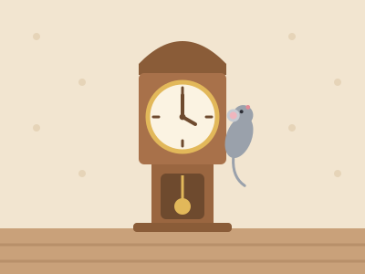

Hickory Dickory Dock in Irish and English
In Irish it is Tic Toc, an Clog. Here are the words in both languages, side by side, with a gentle tune to sing along to.

The words light up as the tune plays. No microphone, nothing to sign up for.
Tic Toc, an Clog (Irish)
Tic toc, tic toc, tic toc, toc!
Rith an luchóg bheag suas an clog,
bhuail an clog a haon, is síos léi,
tic toc, tic toc, tic toc, toc!
Hickory Dickory Dock (English)
Hickory, dickory, dock,
the mouse ran up the clock.
The clock struck one, the mouse ran down,
hickory, dickory, dock.
About the song
Words: traditional, first printed 1744. Tune: as printed in Walter Crane's The Baby's Opera (1877). Public domain.
The Irish words were written for Calm Match to fit the same tune, one syllable to each note. They are still being checked by a fluent Irish speaker, so they may change. Spotted something to improve? Email hello@calmmatch.com.
More songs in Irish and English
Twinkle Twinkle Little Star · Baa, Baa, Black Sheep · Mary Had a Little Lamb · Row, Row, Row Your Boat · Are You Sleeping? · Hot Cross Buns · Rain, Rain, Go Away · Happy Birthday · London Bridge Is Falling Down · Old MacDonald Had a Farm · This Old Man · Incy Wincy Spider · Jack and Jill · Yankee Doodle · Jingle Bells · Humpty Dumpty · Ring a Ring o' Roses · Head, Shoulders, Knees and Toes · Bingo · Here We Go Round the Mulberry Bush · Hush, Little Baby · Lavender's Blue